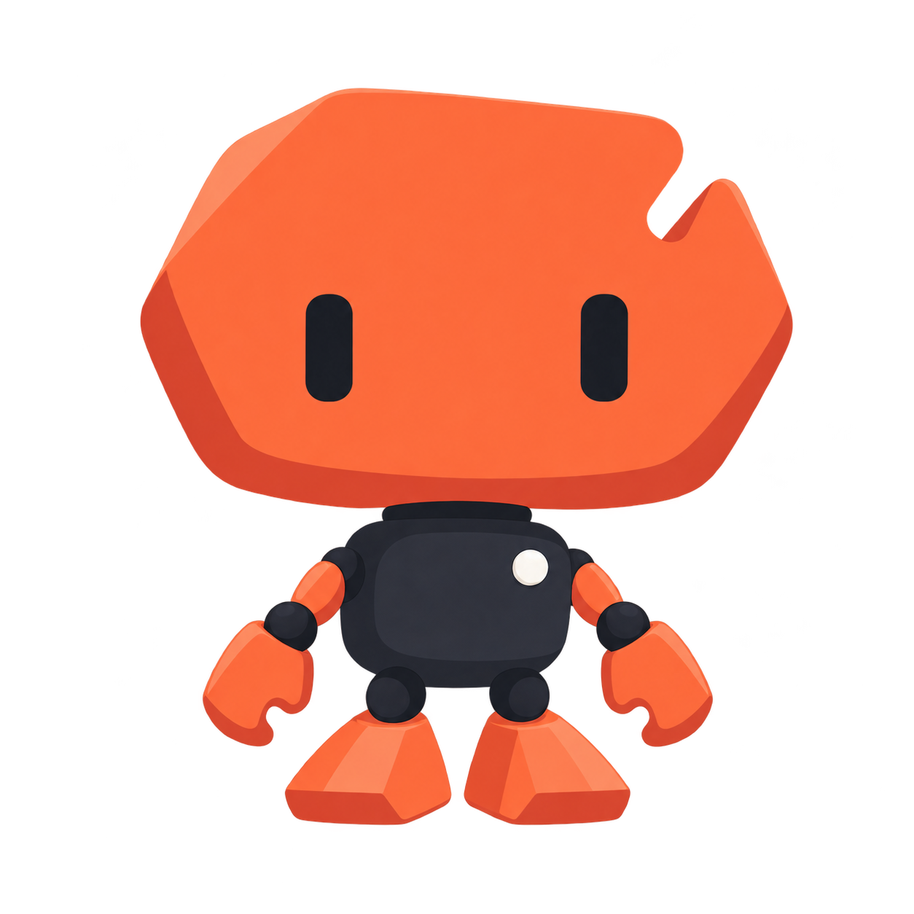

Mochi / Signal
Selected orange–graphite identity · logo, icon and static character proof
Character / light

Icon / 16, 32, 64 and 96 CSS pixels
Menu bar / 22 pixels
Icon / dark background
Menu bar / dark
Static identity proof. Desktop overlay and animation are separate native briefs.